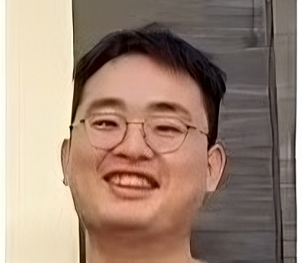

|
Zhengbo Zhang | 张正博
Hi there üëã. I am zhengbo, a second-year Ph.D. student under the supervision of Prof. Soh De Wen at the Singapore University of Technology and Design.
My research interests include generative models (such as consistency models and flow matching) and reinforcement learning.
Email /
Google Scholar /
GitHub
|

|
Selected publications
|
|
|
|
|
|
|
|
Instance Temperature Knowledge Distillation
Zhengbo Zhang, Yuxi Zhou, Jia Gong, Jun Liu, Zhigang Tu,
ArXiv Preprint, 2023
project page / paper / code
We formulate the allocation of instance-specific temperatures in knowledge distillation as a sequential decision-making task and propose a novel reinforcement learning-based method, RLKD, to address it.
|
|
|
Distilling Inter-Class Distance for Semantic Segmentation
Zhengbo Zhang, Chunluan Zhou, Zhigang Tu
IJCAI (Long Oral), 2022
paper
We propose a novel knowledge distillation method for semantic segmentation that encourages the student model to achieve large inter-class distances in the feature space, thereby enhancing segmentation accuracy.
|
This homepage is designed based on Jon Barron's website. Last updated: Dec. 10, 2024
|